2．17世纪初期的微积分工作
微积分问题至少被17世纪十几个最大的数学家和几十个小一些的数学家探索过。位于他们全部贡献的顶峰的是牛顿和莱布尼茨的成就。这里我们只能谈谈这两位大师的一些先驱者的主要贡献。
从距离（作为时间的函数）求瞬时速度的问题以及它的逆问题，不久就被看出是计算一个变量对另一个变量的变化率的问题以及它的逆问题的特例。一般变化率问题的第一个有效的解决属于牛顿，这将放在后面考察。
先叙述几种求曲线的切线的方法。罗贝瓦尔（1602—1675）在他的《不可分量论》（Traité des indivisibles，此书注明1634年，可是直到1693年才出版）中，推广了阿基米德用来求他的螺线上任一点处切线的方法。同阿基米德一样，罗贝瓦尔认为曲线是一个动点在两个速度作用下运动的轨迹。例如，从炮筒里发射的炮弹是在水平速度PQ和垂直速度PR的作用下（图17.2），这两个速度的合速度是PQ和PR构成的平行四边形的对角线。他把这条对角线作为在P点的切线。正如托里拆利指出的那样，罗贝瓦尔的方法是应用了伽利略已经宣布过的法则，即水平的和垂直的速度是彼此独立地作用着的。托里拆利本人应用罗贝瓦尔的方法，求得了曲线（按我们的写法）y＝xn的切线。
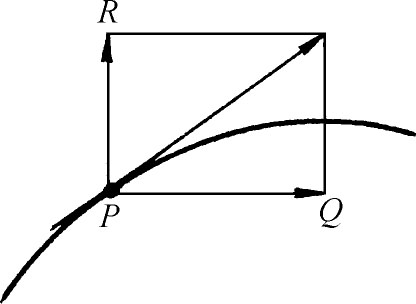
图17.2
把切线定义为合速度方向的直线，比古希腊人把它定义为接触曲线于一点的直线要复杂些，但这个较新的概念适用于许多旧概念不能适用的曲线。一方面，这个概念是有价值的，因为它把纯几何同力学联系起来了，而在伽利略以前，这个联系是根本没有的。但在另一方面，这个切线的定义在数学领域内是令人讨厌的，因为它是在物理的概念上定义切线的。很多曲线是在与运动无关的情况下产生的，切线的这个定义就相应地不适用了。所以求切线的其他方法受到欢迎。
费马的方法是他在1629年已设计好，但在他1637年的手稿《求最大值和最小值的方法》(1)中才发现的。这方法实质上就是现在的方法。设PT是曲线上一点P处的切线（图17.3）。TQ的长叫次切线。费马的计划是求出TQ的长度，从而知道T的位置，最后就能作出TP。
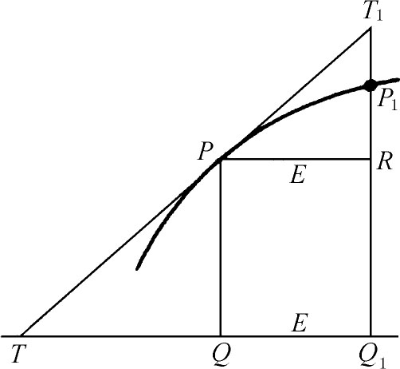
图17.3
设QQ1是TQ的增量，长度为E。因为△TQP∽△PRT1，所以
TQ∶PQ＝E∶T1R．
但是费马说，T1R和P1R是差不多长的；因此
TQ∶PQ＝E∶（P1Q1-QP）．
用我们现在的符号，把PQ叫做f（x），我们就有
TQ∶f（x）＝E∶［f（x＋E）-f（x）］．
因此
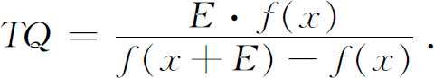
对于费马所处理的f（x），马上就可以用E除上面分式的分子和分母。然后令E＝0（他说是去掉E项），就得到TQ。
费马应用他的切线方法于许多难题。虽然这个方法完全依赖于深奥的极限理论，但它具有微分学现在的标准方法的形式。
对于笛卡儿，求曲线的切线的问题是重要的，因为通过它能获得曲线的性质——例如两条曲线相交的角度。他说：“这不但是我所知道的最有用最一般的问题，而且甚至可以说是我仅仅想要在几何里知道的问题。”他在《几何》的第二册中给出了他的方法。这是纯代数的，不牵涉极限概念；相反，费马的方法如果严密地阐述的话，就要牵涉到极限。但是笛卡儿的方法仅仅对于方程形式是y＝f（x）［其中f（x）是简单的多项式］的曲线有用。虽然费马的方法是普遍的，但笛卡儿却认为自己的方法较好。笛卡儿批评了费马的方法（应该承认，这个方法在当时表达得不清楚），而且想用自己的思想去解释它。而费马却也宣称他的方法优越，他看到了用小增量E的好处。
巴罗（1630—1677）也给出了求曲线切线的方法。巴罗是剑桥大学的数学教授，精通希腊文和阿拉伯文，他能够翻译一些欧几里得的著作并修改一些欧几里得、阿波罗尼斯、阿基米德和特奥多修斯的作品的译文。他的主要著作《几何讲义》（Lectiones Geometricae，1669）是对微积分的一个巨大贡献。其中他应用了几何法，正如他所指出的：“从讨厌的计算重担中解放出来。”1669年巴罗辞去了他的教授席位并让给牛顿，自己转向神学的研究。
巴罗的几何法相当复杂，而且用了辅助曲线。但有一个特点值得注意，因为它反映出那个时代的思想，这就是利用所谓微分三角形或者特征三角形。他是从三角形PQR出发的（图17.4），这个三角形是增量PR的产物，他用了这个三角形相似于三角形PMN的事实，断定切线的斜率QR/PR等于PM/MN。巴罗说，当弧PP′足够小的时候，我们可以放心地把它和P点切线的一段PQ等同起来。三角形PRP′（图17.5）是特征三角形，其中PP′既是曲线的弧长，又是切线的一部分。很早以前帕斯卡在求面积时用过特征三角形，在他以前别人也用过。
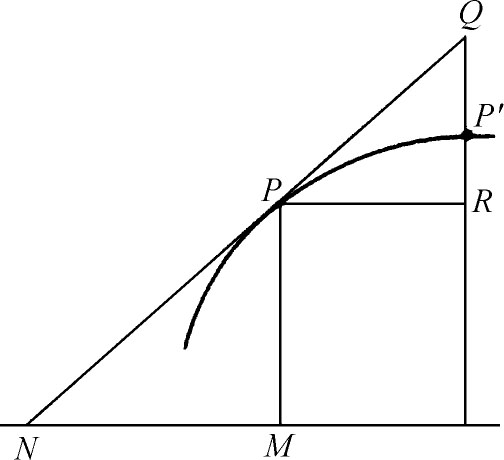 | 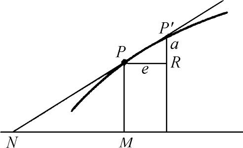 |
| 图17.4 | 图17.5 |
在《几何讲义》的第十讲中，巴罗还是依靠计算，求出曲线的切线。实质上，他的方法和费马的方法是一致的。他用了曲线的方程，例如y2＝px，并用x＋e代替x，用y＋a代替y。这时
y2＋2ay＋a2＝px＋pe．
消去y2＝px，得到
2ay＋a2＝pe．
然后他去掉a和e的高次幂（如果有的话），这相当于用图17.5中的PRP′代替图17.4中的PRP′。由此得出
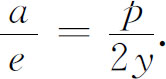
这时，他说明a/e＝PM/NM，所以
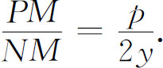
因为PM是y，所以他算出NM，即次切线，从而知道N的位置。
关于第三类问题，即求函数的最大值和最小值的问题，这方面的工作可以说是由开普勒的观测开始的。他对酒桶的形状感兴趣，在他的《测量酒桶体积的新科学》（1615）中，他证明在所有内接于球面的、具有正方形底的正平行六面体中，立方体的容积最大。他的方法是对特殊选择的尺寸计算容积，这本身并不重要；但他注意到，当越来越接近最大体积时，对应于一个尺寸固定的变化，体积的变化越来越小。
费马在他的《求最大值和最小值的方法》中给出了他的方法，并用下面的例子进行说明：已知一条直线（段），要找出它上面的一点，使被这点分成的两部分线段组成的矩形最大。他把整个线段叫做B，并设它的一部分为A。那么矩形的面积就是AB-A2。然后他用A＋E代替A，这时另外一部分就是B-（A＋E），矩形的面积就成为（A＋E）（B-A-E）。他把这两个面积等同起来，因为他认为当取最大值时，这两个函数值——即两个面积——应该是相等的。所以
AB＋EB-A2-2AE-E2＝AB-A2．
两边消去相同的项并用E除两边后，得到
B＝2A＋E．
然后令E＝0（他说去掉E项），得到B＝2A。因此这矩形是正方形。
费马说，这个方法是完全普遍的。他这样描述道：如果A是自变量，并且如果A增加到A＋E，那么当E变成无限小，且当函数经过一个极大值（或极小值）时，函数的前后两个值将是相等的。把这两个值等同起来；用E除方程，然后使E消失，就可以从所得的方程确定使函数取最大值或最小值的A值。这个方法实质上是他用来求曲线的切线的方法。但是基本的事实在那里是两个三角形相似；而在这里是两个函数值相等。费马没有看到有必要去说明先引进非零E，然后再用E通除之后令E＝0的合理性(2)。
17世纪求面积、体积、重心、曲线长的工作开始于开普勒，据说他被体积问题吸引住了，因为他注意到酒商用来求酒桶体积的方法不精确。用现在的标准来看，（在《测量酒桶体积的新科学》中的）这个工作是粗糙的。例如，圆的面积对他来说是无穷多个三角形的面积，每个三角形的顶点在圆心，底在圆周上，于是由正内接多边形的面积公式——周长乘上半径除以2，他就得到了圆的面积。类似地，他认为球的体积是小圆锥的体积的和，这些圆锥的顶点在球心，底在球面上。他把圆锥看成是非常薄的圆盘的和，并由此算出它的体积。然后他进而证明球的体积是半径乘球面积的三分之一。在阿基米德的《球和柱》（Spheroids and Conoids）的启发下，他把面积旋转成新的图形，并计算其体积。同样地，他把被弦割下的弓形绕着弦旋转，并求其体积。
用无数个同维的无穷小元素之和来确定曲边形面积和体积，是开普勒方法的精华。把圆看作是无数个三角形的和，在他的思想中是用连续性原理（第14章第5节）证明的。他看到两种图像本质上没有区别。由同样的理由，一条直线和一个无穷小面积实际上是一样的；而且在一些问题中，他的确认为面积就是直线的和。
在《两门新科学》中，伽利略对于面积的想法和开普勒的想法相似。在处理匀加速运动的问题时，他给出了论据，证明在时间速度曲线下的面积就是距离。假定一个物体以变速v＝32t运动，这个速度在图17.6中用直线表示；那么在时间OA通过的距离就是面积OAB。伽利略得到这个结论，是认为A′B′是某个瞬时的速度，又是所走过的无穷小距离（如果乘上一个无穷短的时间，认为它就是距离），然后证明由直线A′B′组成的面积OAB必定是总的距离。因为AB是32t，OA是t，所以OAB的面积是16t2。这个推理当然是不清楚的。但在伽利略的思想里，却得到一种哲学观点的支持，即面积OAB是由A′B′那样无数多个不可分的单位堆积而成的。他在线段和面积一类的连续量的结构问题上花了很多时间，但没有得到解决。
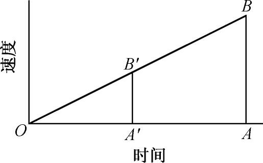
图17.6
卡瓦列里（Bonaventura Cavalieri，1598—1647）是伽利略的学生，波洛尼亚一学府的教授。他在开普勒和伽利略的影响下，并且在后者的敦促下，考察了微积分问题。卡瓦列里把伽利略和其他人在不可分量方面的思想发展成几何方法，并出版了这方面的著作《用新的方法推进连续体的不可分量的几何学》（Geometria Indivisibilibus Continuorum Nova quadam Ratione Promota，1635）。他认为面积是无数个等距平行线段构成的，体积是无数个平行的平面面积构成的；他分别把这些元素叫做面积和体积的不可分量。卡瓦列里承认组成面积或体积的不可分量的数目一定是无穷大的，但他不想在这点上反复推敲。粗浅地说，正如卡瓦列里在他的《六道几何练习题》（Exercitationes Geometricae Sex，1647）中指出的，不可分法认为线是由点构成的，就像链是由珠子穿成的一样；面是由直线构成的，就像布是由线织成的一样；立体是由平面构成的，就像书是由页组成的一样。不过，它们是对于无穷多个组成部分来说的。
卡瓦列里的方法（或者原则）可用下面的命题来说明（这个命题当然可以用其他方法证明）。为了证明平行四边形ABCD（图17.7）是三角形ABD或者BCD的两倍，他证明当GD＝BE时，GH＝FE。因此三角形ABD和BCD是由相等数目的等长线段GH和EF构成的，所以一定有相等的面积。
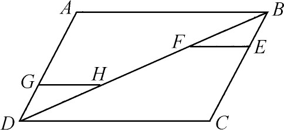
图17.7
这个原则已编入现在通行的立体几何书中，作为一个定理，叫做卡瓦列里定理。这个原则说，如果两个立体有相等的高，而且它们的平行于底面并且离开底面有相等距离的截面面积总有一定的比的话，那么这两个立体的体积之间也有这个比。实质上，运用了这个原则，卡瓦列里证明了圆锥的体积是外接圆柱的三分之一。同样，他考虑了在两条曲线下的面积。用我们的写法，曲线可为y＝f（x）和y＝g（x），其中x的范围相同。把面积看成是纵坐标的和，如果一条曲线的纵坐标与另一条曲线的纵坐标的比是常数，那么卡瓦列里说，这两个面积也有同样的比。他用这个方法在《一百道杂题》（Centuria di varii problemi，1639）中证明：对于从1到9的正整数n，公式（按我们的记法）
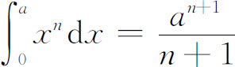
成立。可是，他的方法完全是几何的。他能成功地获得正确的结果，是因为他运用他的原则计算面积间和体积间的比的时候，组成相应的面积和体积的不可分量间的比是常数。
卡瓦列里的不可分法遭到了同时代人的批评。他企图回答他们，但没有严密的理由。有些时候他宣称他的方法只是一个避免穷竭法的实用方法。尽管方法受到批评，但许多数学家还是广泛地利用了它。另外，像费马、帕斯卡和罗贝瓦尔都用了这个方法，甚至用了“纵坐标的和”那样的语言，但是他们把面积想象成是无数无穷小长方形的和，而不是线的和。
1634年罗贝瓦尔（他宣称曾研究过“神圣的阿基米德”）使用了实质上是不可分法去求出旋轮线的一个拱下面的面积，这是梅森在1629年让他注意的问题。有时罗贝瓦尔被认为是不可分法的独立发现者，但实际上他相信线、面和体的无限可分性，因此就不存在任何最后的部分。他的作品以《不可分量论》（Traité des indivisibles）命名，但是他把他的方法叫做“无穷大法”。
罗贝瓦尔获得摆线下的面积的方法是有启发性的。设OABP（图17.8）是旋轮线的半个拱下的面积。OC是母圆的直径，P是拱上的任意一点。作PQ＝DF。Q的轨迹叫做伴旋轮线（只要原点是OQB的中点，x轴平行于OA，那么用我们的写法，曲线OQB就是y＝asin x/a，其中a是母圆的半径）。罗贝瓦尔断言，曲线OQB把矩形OABC分成两个相等的部分，因为基本上，对于OQBC中的每一条线DQ，在OABQ中都相应地有一条线RS。所以卡瓦列里的原理用上了。矩形OABC的底和高分别等于母圆的半圆周和直径；因此它的面积是圆面积的2倍。而OABQ的面积和母圆面积相等。另外，OPB和OQB之间的面积等于半圆OFC的面积，这是因为由Q的定义，DF＝PQ，使得这两块面积在每个线段上都有相等的宽。所以在半拱下的面积是母圆面积的
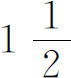
倍。罗贝瓦尔还求出正弦曲线的一个拱下的面积，这拱绕着底旋转后产生的体积，以及其他与旋轮线有关的体积和旋轮线面积的形心。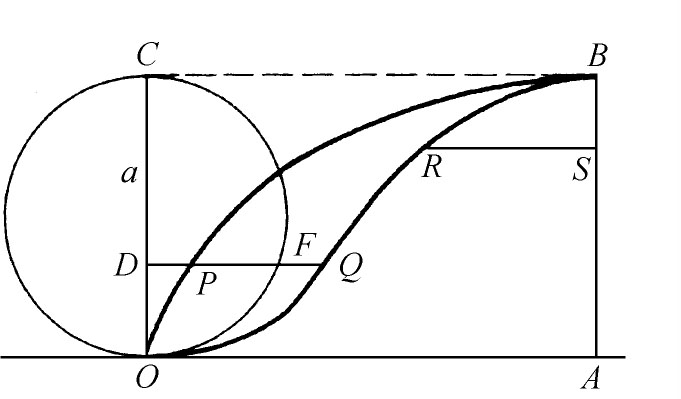
图17.8
计算面积、体积和其他量的最重要的新方法，从修改古希腊的穷竭法开始。让我们考虑一个典型的例子：计算抛物线y＝x2下从x＝0到x＝B的面积（图17.9）。穷竭法对于不同的曲线形面积，用不同类型的直线形去逼近，而17世纪的一些人却采用系统的程序，使用矩形如图17.9所示。当这些矩形的宽度d越来越小时，这些矩形的面积的和就越来越接近曲线下的面积。如果底宽都是d，那么根据纵坐标是横坐标的平方这一抛物线的特性，这和就是
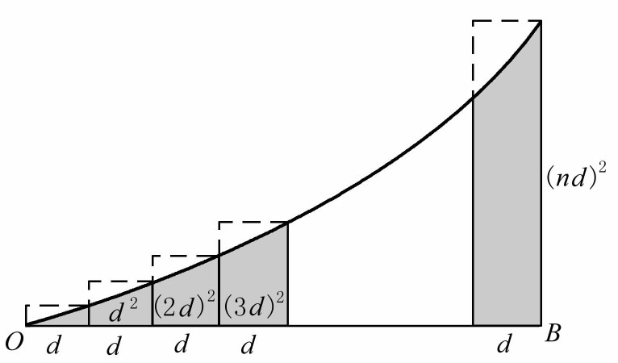
图17.9
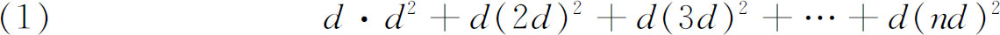
或者
d3（1＋22＋32＋…＋n2）．
因为前n个自然数的m次幂的和，帕斯卡和费马就为着这样的问题的需要已经求得，所以数学家能够容易地用
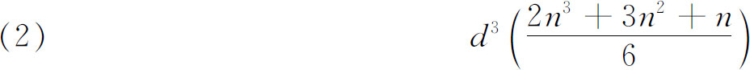
代替上一个式子。但是d是定长OB除以n。因此（2）式成为
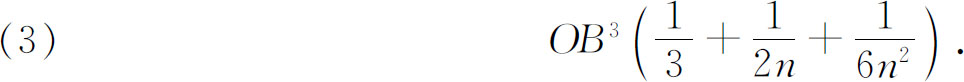
现在如果照这些人的说法，认为当n是无穷大时，最后两项能够忽略的话，正确的结果就得到了。那时极限过程还没有提出——或者仅仅是粗糙地觉察到——所以最后两项的省略并没有证明。
我们看到这种方法和穷竭法一样，要求用直线形逼近曲线形。但是在最后的步骤中存在着重要的差别：在老方法中用到间接证明的地方，在这里矩形的数目成为无穷大，而且当n成为无穷大时，人们就取（3）的极限——虽然当时他们并没有明显地从极限上着想。这条新的途径，最早是斯蒂文于1586年在他的《静力学》（Statics）中提出来的，并有许多追随者，包括费马在内(3)。
如果涉及的曲线不是抛物线，那就必须用问题中曲线的特性代替抛物线的特性，并因此得出一些其他的级数来代替（1）。从类似于（1）的求和得到（2）的类似是需要技巧的。因此关于面积、体积和重心的结果是不多的。当然用强有力的反微分法来计算这样的和的极限的方法，那时候还不能想象。
实质上应用我们刚才说明的求和技巧，费马在1636年以前就知道，对于除了-1以外的任何有理数n，有（用我们的记法）(4)
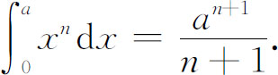
这个结果也由罗贝瓦尔、托里拆利和卡瓦列里各自独立地获得，虽然有些仅仅是几何的形式，有些对n加了限制。
在用几何形式求和法的人中间有帕斯卡。1658年他从事于摆线问题研究(5)。他计算出曲线的任一段和平行于底的一直线所包围的图形面积、该图形的形心，以及由该图形绕着它的底（图17.10中的YZ）或者垂直线（对称轴）旋转生成的立体的体积。在这一工作中，和在关于y＝xn一类曲线下的面积的早期著作中，他把小矩形加起来，其方式与上文处理（1）的方式相同，只不过他的工作与结果都是用几何语言叙述的。他用德东维尔（Dettonville）的假名提出了他已解决的问题，向其他数学家挑战，然后出版了他自己卓越的解［《德东维尔的信》（Lettres de Dettonville），1659］。
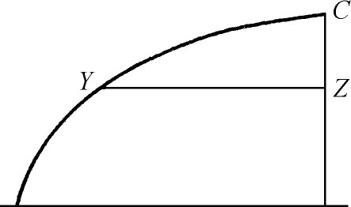
图17.10
在牛顿和莱布尼茨以前，对于把分析方法引入微积分的工作做得最多的人是沃利斯（1616—1703）。虽然他直到二十岁左右才开始学习数学——他在剑桥大学时是专门研究神学的——但是他在牛津大学成为几何教授而且在那个世纪中是仅次于牛顿的最能干的英国数学家。在他的《无穷的算术》（Arithmetica Infinitorum，1655）中，他运用分析法和不可分法求出了许多面积并得到广泛而有用的结果。
沃利斯的一个值得注意的结果，是在他分析地计算圆面积的努力中得到的，即π的新的表达式。他计算由坐标轴、x点的纵坐标和函数
y＝（1-x2）0，y＝（1-x2）1，y＝（1-x2）2，y＝（1-x2）3，…
的曲线围成的面积，得到的结果分别是
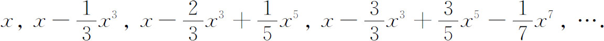
当x＝1时这些面积是
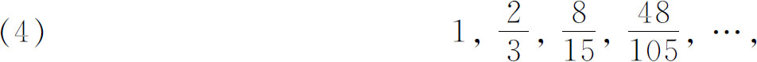
而圆却是由y＝（1-x2）1/2给出的。应用归纳法和插值法，沃利斯算出它的面积，并通过更复杂的推理得到
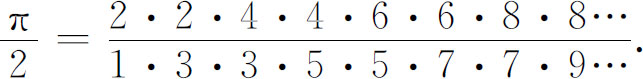
圣文森特的格雷戈里在他的《几何著作》（Opus Geometricum，1647）中给直角双曲线和对数函数之间的重要联系提供了根据。他用穷竭法证明：对于曲线y＝1/x（图17.11），如果xi选择得使面积a，b，c，d，…相等，则yi便构成几何数列。这意味着从x0到xi的面积之和（这些和构成算术数列）是与yi值的对数成比例的，这可用我们的符号写为
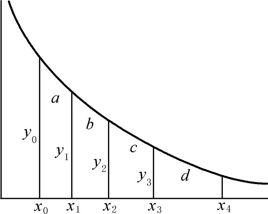
图17.11
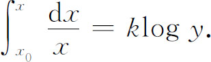
因为
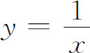
，所以这和我们熟悉的积分结果是一致的。第一个注意到面积能解释成对数的人是格雷戈里的学生——比利时耶稣会会员萨拉萨（Alfons A．de Sarasa，1618—1667），这个解释见于他的书《关于梅森的命题的问题的解答》（Solutio Problematis a Mersenno Propositi，1649）。1665年左右牛顿也注意到双曲线下的面积与对数之间的关系，并将这个关系写在他的《流数法》（Method of Fluxions）中。他用二项式定理展开1/（1＋x），并逐项积分，得到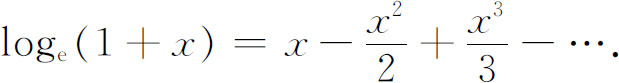
墨卡托用格雷戈里的结果，在他的1668年的《对数技术》（Logarithmotechnia）中，独立地给出了同样的级数（但没有明显地叙述出来）。其他的人不久发现了（按照我们的说法）收敛得更快的级数。关于抛物线的求积以及它和对数函数的联系这一工作是由许多人做的，而且有很多是在通信中交流的，因此很难查出谁是最先发现的人。
直到1650年还无人相信一曲线的长度能完全等于某直线长度。实际上，在《几何》第二册中，笛卡儿说在曲线和直线之间的关系是未知的或者是永不可知的。但是罗贝瓦尔求出了摆线的一个拱的长度。建筑师雷恩（Christopher Wren，1632—1723）由证明弧PA＝2PT而算出摆线的长度（图17.12）(6)。尼尔（1637—1670）也得到（1659）一个拱的长度，他还用沃利斯的提示，算出了半立方抛物线（y3＝ax2）的长度(7)。费马也计算了一些曲线的长度。这些人一般是用内接多边形去逼近曲线的，先求出各边的和，然后随着每条边长的缩小而使边数成为无穷大。圣安德鲁斯大学和爱丁堡大学的教授詹姆斯·格雷戈里［1638—1675，对他的工作，他的同时代人略有所知，直到滕博尔（H．W．Turnbull）编辑的纪念册于1939年出版后，才一般地被人知道］，在他的《几何的通用部分》（Geometriae Pars Universalis，1668）中给出了计算曲线长度的方法。
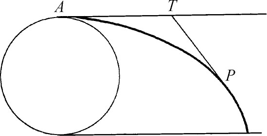
图17.12
关于计算曲线长度的更进一步的结果是惠更斯（1629—1695）得到的。实际上，他给出了蔓叶线的弧长。他还对面积和体积的工作作出贡献，而且是第一个得到除了球以外的表面积的结果的。例如他得到抛物面和双曲面的一部分表面的面积。惠更斯用纯几何的方法得到所有这些结果，不过也和阿基米德一样，他有时用算术得到数量的解答。
计算椭圆的长度难住了数学家们。事实上，詹姆斯·格雷戈里声称椭圆和双曲线的长度不能用已知函数表示出。有一段时期数学家们对这问题的进一步工作失望了，直到下一世纪才得到新的结果。
我们讨论了牛顿和莱布尼茨的先驱者对于推动微积分工作的四个主要问题所作的主要贡献。当时认为这四个问题是不同的，但也注意到甚至于利用了它们之间的联系。例如费马就是用同样的方法求函数的最大值和曲线的切线。另外，那时也已看出函数对于自变量的变化率问题与切线问题是同一问题。实际上，费马和巴罗的求切线的方法，仅仅是求变化率的几何副本。但是微积分的主要特征——仅次于导数的概念以及积分作为和的极限的概念本身的——便是积分可以由微分的逆过程求得，或者说求反导数。这一关系的很多迹象早已遇到过，但是它的意义却没有人体会到。托里拆利在特殊的例子中看到了变化率问题本质上是面积问题的反问题。事实上，这包含在伽利略所用的事实中：在速度时间的图形下的面积就是距离。因为距离的变化率必定是速度，所以如果把面积看作是“和”，它的变化率必定是面积函数的导数。但是托里拆利没有看到普遍的情况。费马同样也只在特殊的例子中知道了面积和导数间的关系，没有体会到它的一般性或重要性。詹姆斯·格雷戈里在他的1668年的《几何的通用部分》中证明切线问题是面积问题的逆问题，但是他的书未引起注意。在《几何讲义》中，巴罗有了求曲线的切线问题和面积问题之间的关系，但它是几何形式的，而且他本人也没有认识到它的重要性。
实际上在牛顿和莱布尼茨作出他们的冲刺之前，微积分的大量知识已经积累起来了。甚至在巴罗的一本书里，就能看到求切线的方法、两个函数的积和商的微分定理、x的幂的微分、求曲线的长度、定积分中的变量代换，甚至还有隐函数的微分定理。虽然在巴罗那儿，几何的表达使得普遍思想难于辨识，但在沃利斯的《无穷的算术》中，可与之相比较的结果是用代数的形式表达的。
人们于是惊问，在主要的新结果方面，还有什么有待于发现呢？问题的回答是方法的较大的普遍性以及在特殊问题里已建立起来的东西中认识其普遍性。这世纪的前三分之二的时间内，微积分的工作沉没在细节里。另外，许多人在通过几何来获得严密性的努力中，没有去利用或者探索新的代数和坐标几何中蕴含的东西，作用不大的细微末节的推理使他们精疲力竭了。最终能培育出必要洞察力和高度概括力的是费马、圣文森特的格雷戈里和沃利斯的算术工作，而霍布斯批评他们用符号替代几何。詹姆斯·格雷戈里在《几何的通用部分》的序言中说，数学的真正划分不是分成几何和算术，而是分成普遍的和特殊的。这普遍的东西是由两个包罗万象的思想家——牛顿和莱布尼茨提供的。